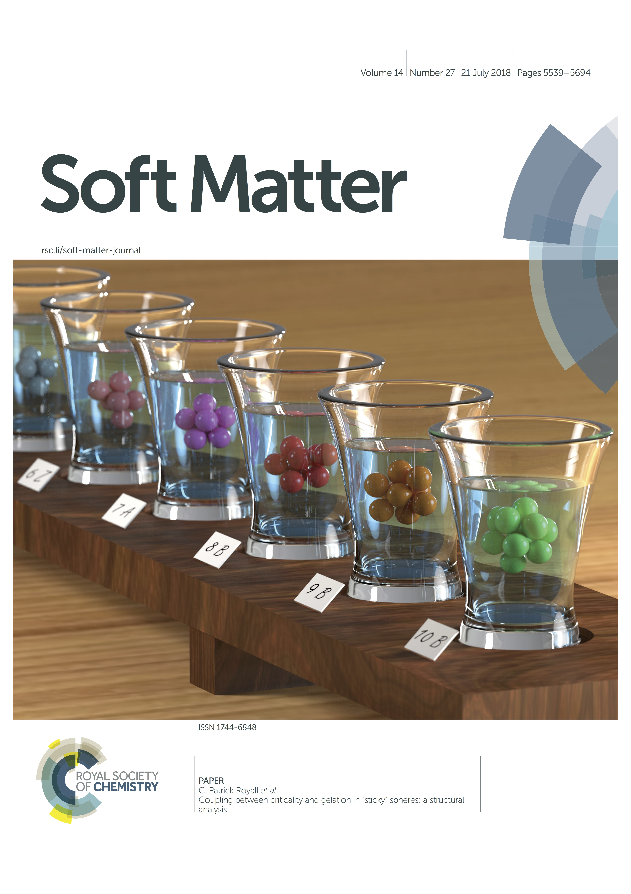
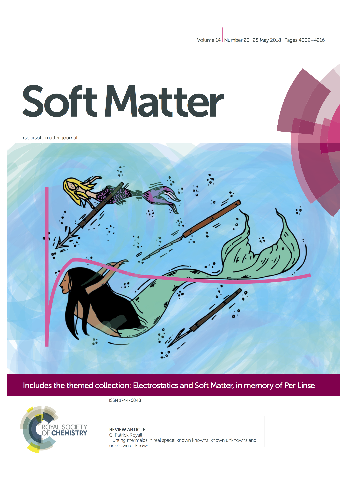
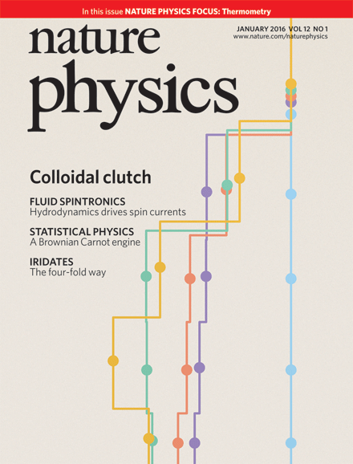
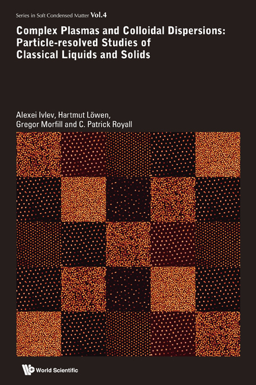

-
"Complex Plasmas and Colloidal Dispersions: Particle-resolved Studies of Classical Liquids and Solids"
Ivlev A, Loewen, H, Morfill G and Royall CP. World Scientific. (2012).
-
Royall CP, Charbonneau P, Dijkstra M, Russo J, Smallenburg F, Speck T and Valeriani C
"Colloidal Hard Spheres: Triumphs, Challenges and Mysteries"
(2023) Link to ArXiV -
Dauchot O and Ladieu F and Royall CP
"The glass transition in molecules, colloids and grains: universality and specificity"
Comptes. Rendus. de Physique (2023) 1-22 link to PDF -
Araujo NAM et al. “Steering self-organisation through confinement”,
Soft Matter 19 1695-1704 (2023). link to PDF -
Royall CP, Faers MA, Fussell SL and Hallett JE,
"Real Space Analysis of Colloidal Gels: Triumphs, Challenges and Future Directions"
J. Phys.: Condens. Matter, 33 453002 (2021). link to PDF -
Royall CP, Turci F and Speck T
"Dynamical phase transitions and their relation to structural and thermodynamic aspects of glass physics",
J. Chem. Phys. (invited perspective) 153 090901 (2020). link to PDF -
Royall CP, Turci F, Tatsumi S, Russo J and Robinson J
"The race to the bottom: approaching the ideal glass?"
J. Phys.:Condens: Matter 30 363001 (2018), link to PDF - Royall CP, "Hunting Mermaids in Real Space: Known Knowns, Known Unknowns and Unknown Unknowns", Soft Matter 14 4020-4026 (2018). PDF download.
- Royall CP and Williams SR "The role of structure in dynamical arrest”. Phys. Rep. 560 1-75 (2015). PDF download Updated version on ArXiV.
- Royall CP, Poon WCK, and Weeks ER, "In search of colloidal hard spheres", Soft Matter, 9, 17-27 (2013). PDF download.
-
Poon WCK, Weeks ER and Royall CP
"On measuring colloidal volume fractions"
Soft Matter 8 21-30 (2012). PDF download - Donald AM, He CB, Royall CP, et al., "Applications of environmental scanning electron microscopy to colloidal aggregation and film formation" Colloid Surface A 17437-53 (2000) PDF download
- Zampetaki A, Yang, Y, Loewen, H and Royall CP
"Dynamical Order and Many-Body Correlations in Zebrafish show that Three is a Crowd"
accepted in Nature Commun, 2024.
-
Thijssen, K, Liverpool TB, Royall CP, Jack RL
"Necking and failure of a colloidal gel arm: signatures of yielding on different length scales"
Soft Matter 19 7412-7428 (2023). link to PDF
-
Kloucek MB, Machon T, Kajimura S, Royall CP, Masuda N, and Turci F
"Biases in inverse Ising estimates of near-critical behavior"
Phys. Rev. E 108 014109 (2023), link to PDF
-
Schwarzendahl FJ, Mauleon-Amieva A, Royall CP, Löwen H
"Stability of interlocked self-propelled dumbbell clusters"
Phys. Rev. E 107 054606 (2023). link to PDF
-
Ortlieb L, Ingebrigtsen TS, Hallett JE, Turci F and Royall CP
"Probing excitations and cooperatively rearranging regions in deeply supercooled liquids"
Nature Commun. 14 2621 (2023) link to PDF
-
Mauleon-Amieva A, Allen MP,Liverpool, TB, Royall CP
"Dynamics and Interactions of Quincke Roller Clusters: from Orbits and Flips to Excited States"
Sci. Adv. 9 eadf5144 (2023). link to PDF
-
Gispen W, Coli GM.,van Damme R, Royall CP and Dijkstra M
"Crystal polymorph selection mechanism of hard spheres hidden in the fluid"
ACS Nano, 17 8807–8814 (2023). link to PDF
-
Leoni F, Martelli F, Royall CP, Russo J
"Structural signatures of ultrastability in a deposited glassformer"
Phys. Rev. Lett. 130 198201 (2023). link to PDF
-
Moore FJ, Russo J, Liverpool TB and Royall CP
"Active Brownian Particles in Random and Porous Environments"
J. Chem. Phys. 158 104907 (2023). link to PDF
-
Fussell SL, Royall CP, van Duijneveldt JS
"Controlling Kinetic Pathways in Demixing Microgel–Micelle Mixtures"
Langmuir, 39 1010-1018 (2023). link to PDF
-
Luo C, Robinson JF, Pihlajamaa I, Debets VE, Royall CP, and Janssen LMC
"Many-Body Correlations Are Non-negligible in Both Fragile and Strong Glassformers"
Phys. Rev. Lett. 129 145501 (2022). link to PDF
-
Williams I, Oguz EC, Loewen H, Poon WCK and Royall CP
“The rheology of confined colloidal hard discs”
J. Chem. Phys. 156 184902 (2022). link to PDF
-
Dong J, Turci F, Jack RL, Faers MA and Royall CP,
"Direct Imaging of Contacts and Forces in Colloidal Gels"
J. Chem. Phys. 156 214907 (2022). link to PDF
-
Fussell SL, Royall CP and van Duijneveldt JS,
"Temperature-controlled fluid-fluid phase separation in microgel - polymeric micelle mixtures"
J. Coll. Interf. Sci. 606 953-960 (2022). link to PDF -
Ríos de Anda I, Wilkins JW, Robinson JF, Royall CP and Sear RP
“Modelling the filtration efficiency of a woven fabric: The role of multiple lengthscales”
Phys. Fluids. 34 033301 (2022) link to PDF link to PoF focus -
Yang Y, Turci F, Kague E, Hammond CL, Russo J and Royall CP
"Dominating Lengthscales of Zebrafish Collective Behaviour"
PLOS Comp. Biol. 18 e1009394 (2022) link to PDF -
Robinson JF, Ríos de Anda I, Moore FJ, Gregson FKA, Reid JP, Husain L, Sear RP and Royall CP,
"How effective are face coverings in reducing transmission of COVID-19?"
Aerosol Sci. Tech. 56 473–487 (2022) link to PDF -
Carter BMGD, Royall CP, Dyre JC and Ingebrigtsen TS,
"Isomorphs in nanoconfined liquids",
Soft Matter 17 8662 (2021). link to PDF -
Moore FJ, Royall CP, Liverpool TB and Russo J,
"Crystallisation and polymorph selection in active Brownian particles"
Eur. Phys. J. E. 44 121 (2021). link to PDF -
Kague E, Turci F, Newman E, Yang Y, Brown KR, Agla MS, Otaify GA, Temtamy SA, Ruiz-Perez, VL Cross S, Royall CP, Witten PE and Hammond CL,
"3D assessment of intervertebral disc degeneration in zebrafish identifies changes in bone density that prime disc disease",
Bone Research 9 39 (2021). link to PDF -
Cheng, R and Li J, Ríos de Anda I, Taylor TWC, Faers MA, Anderson JLR, Seddon AM, and Royall CP,
"Protein–Polymer Mixtures in the Colloid Limit: Aggregation, Sedimentation and Crystallization"
J. Chem. Phys. 155 114901 (2021). link to PDF -
Ríos de Anda I, Coutable-Pennarun A, Brasnett C, Whitelam, S, Seddon, A, Russo J, Anderson JLR and Royall CP,
"Decorated Networks of Native Proteins: Nanomaterials with Tunable Mesoscopic Domain Size"
Soft Matter 17 6873 (2021) link to PDF -
Robinson JR, Rios de Anda I, Moore FJ, Reid JP, Sear RP and Royall CP,
"Efficacy of face coverings in reducing transmission of COVID-19: calculations based on models of droplet capture",
Phys. Fluids. 33 043112 (2021) link to PDF -
Sakaï, N and Royall CP
"Active Dipolar Colloids in Three Dimensions: Strings, Sheets, Labyrinthine Textures and Crystals" ,
arXiv:2010.03925 (2020). link to arXiv -
Gregson F, Robinson JF, Miles RE, Reid JP
"Drying and Crystallization of Evaporating Sodium Nitrate Aerosol Droplets",
J. Phys. Chem. B. 124 6024–6036 (2020). link to PDF -
Mauleon-Amieva A, Mosayebi M, Hallett JE, Turci F, Liverpool TB, van Duijneveldt JS and Royall CP,
"Competing Active and Passive Interactions Drive Amoeba-like Living Crystallites and Ordered Bands",
Phys. Rev. E (2020), ArXiV 1907.11257. link to PDF -
Ferreiro-Córdova C, Royall CP, van Duijneveldt JS,
"Anisotropic viscoelastic phase separation in polydisperse hard rods: non-sticky gelation",
Proc. Nat. Acad. Sci. 7 3415-3420 (2020) link to PDF -
Robinson JF, Roth R and Royall CP
"Morphological thermodynamics for hard bodies from a controlled expansion",
Phil. Mag. 1-22 (2020) link to ArXiV -
Robinson JF, Gregson FKA, Miles REH, Reid JP, Royall CP
"Nucleation kinetics in evaporating sodium nitrate aerosols"
J. Chem. Phys. 152 074503 (2020) link to PDF -
Hallett JE, Turci F and Royall CP,
"The Devil is in the Details: Pentagonal Bipyramids and Dynamic Arrest",
accepted by J. Stat. Mech.: Theory and Experiment 014001 (2020). link to PDF - Fussell SL, Bayliss K, Coops C, Matthews L, Li W, Briscoe WH, Faers WA, Royall CP and van Duijneveldt JS, "Reversible temperature-controlled gelation in mixtures of pNIPAM microgels and non-ionic polymer surfactant " Soft Matter, 15 8578 (2019).
- Meissner MF, Seddon AM and Royall CP, "Colloidal Microfluidics", in "Frontiers of Nanoscience", Elsevier 2019. link to PDF
- Robinson JF, Turci F, Roth R and Royall CP "Many-body correlations from integral geometry", Phys. Rev. E 100 062126 (2019). link to PDF
- Ingebrigtsen TS, Dyre JC, Schroder TB and Royall CP "Crystallisation Instability in Glassforming Mixtures", Phys. Rev. X 9, 031016, (2019) PDF download.
- Robinson JF, Turci F, Roth R and Royall CP "Morphometric approach to many-body correlations in hard spheres", Editor's pick in Phys. Rev. Lett. 122, 068004, (2019), PDF download.
- Gregson FKA, Robinson JF, Miles REH, Royall CP and Reid JP "Drying Kinetics of Salt Solution Droplets: Water Evaporation Rates and Crystallization", J. Phys. Chem. B. 1, 123, (2019), PDF download.
- Hallett JE, Turci F and Royall CP "Local structure in deeply supercooled liquids exhibits growing lengthscales and dynamical correlations", Nature Communications 9 3272 (2018). link to Nature Website (Open Access).
- Richard D, Speck T and Royall CP, "Is directed percolation in colloid-polymer mixtures linked to dynamic arrest?", Editor's pick in J. Chem. Phys. 148 241101(2018). PDF download.
- Royall CP "Kinetic Crystallisation Instability in Liquids with Short-Ranged Attractions", accepted in Mol. Phys. (Special Edition in Honour of Daan Frenkel), ArXiV 1806.05469 (2018), Link to ArXiV.
- Richard D, Hallett JE, Speck T and Royall CP, "Coupling between criticality and gelation in "sticky" spheres: A structural analysis", Soft Matter, 14 5554-5564 (2018), PDF download.
- Turci F, Speck T and Royall CP, "Structural-dynamical transition in the Wahnstrom mixture", Eur. Phys. J. E. 41 54 (2018). PDF download.
- Pinney RK, Liverpool TB and Royall CP, "Yielding of a model glass former: An interpretation with an effective system of icosahedra", Phys. Rev. E 97 032609 (2018). PDF download.
- Zhang I, Pinchaipat R, Wilding, NB, Faers MA, Bartlett P, Evans R and Royall CP, "Composition inversion in mixtures of binary colloids and polymer", J. Chem. Phys. 148 184902 (2018). PDF download.
- Dong J, Meissner M, Eggers J, Seddon AM, and Royall CP "Opposed flow focusing: evidence of a second order jetting transition", Soft Matter, 14 8344-8351 (2018), PDF download.
- Wood N, Russo J, Turci F and Royall CP "Coupling of sedimentation and liquid structure: influence on hard sphere nucleation", J. Chem. Phys. 149 204506 (2018), PDF download.
- Royall CP, Williams SR and Tanaka H "Vitrification and gelation in sticky spheres", J. Chem. Phys. 148 044501 (2018). PDF download.
- Williams I, Turci F, Hallett JE, Crowther P, Cammarota C, Biroli G and Royall CP "Experimental determination of configurational entropy in a two-dimensional liquid under random pinning ", J. Phys: Condens. Matter 30 094003 (2018). PDF download
- Carter BMGD, Turci F, Ronceray P and Royall CP, "Structural Covariance in the Hard Sphere Fluid", J. Chem. Phys. 148 204511 (2018), PDF download
- Rios de Anda, I, Tuci F, Sear R and Royall CP, "Long-Lived Non-Equilibrium Interstitial-Solid-Solutions in Binary Mixtures", J. Chem. Phys 147 124504 (2017). PDF download.
- Pinchaipat R, Campo M, Turci F, Hallett JE, Speck T, and Royall CP "Experimental Evidence for a Structural-Dynamical Transition in Trajectory Space", Phys. Rev. Lett. 119 028004 (2017). PDF download.
- Turci F, Royall CP and Speck T "Nonequilibrium Phase Transition in an Atomistic Glassformer: The Connection to Thermodynamics", Phys. Rev. X. 7 031028 (2017). PDF download.
- Turci F. Tarjus G, and Royall CP "From glass formation to icosahedral ordering by curving three-dimensional space", Phys. Rev. Lett. 118 215501 (2017). PDF download
- Meissner M, Dong J, Eggers J, Seddon AM, and Royall CP, "Oil-in-water microfluidics on the colloidal scale: new routes to self-assembly and glassy packings", Soft Matter, 13 788-794 (2017). PDF download.
- Griffiths S, Turci F and Royall CP "Local structure of percolating gels at very low volume fractions", J. Chem. Phys. 146 014905 (2017) PDF download.
- Royall CP and Kob W "Locally favoured structures and dynamic length scales in a simple glass-former", J. Stat. Mech.: Theory and Experiment 024001 (2017) PDF download.
- Razali A, Fullerton CJ, Turci F, Hallet JE, Jack RL and Royall CP "Effects of vertical confinement on gelation and sedimentation of colloids", Soft Matter 13 3230-3239 (2017) PDF download.
- Williams I, Oguz EC, Speck T, Bartlett P, Loewen H and Royall CP “Transmission of torque at the nanoscale", Nature Physics, 12 98-103 Link to Nature Website.
- Taffs J and Royall CP "The role of fivefold symmetry in suppressing crystallisation", Nature Communications 7 13225 (2016). Link to Nature Website (open access).
- Pinney R, Liverpool, T and Royall CP "Structure in Sheared Supercooled Liquids: Dynamical Rearrangements of an Effective System of Icosahedra", J. Chem. Phys. 143 244507 (2016). PDF download.
- Dougan N, Crowther P, Royall CP and Turci F " Controlling local order of athermal self-propelled particles", J. Stat. Mech: Theory and Experiment 124001 (2016). PDF download.
- Turci, F and Royall CP "Crystallisation driven by sedimentation: a particle resolved study", J. Stat. Mech.: Theory and Experiment 8 084004 (2016). PDF download.
- Statt A, Pinchaipat R, Turci, F, Evans R and Royall CP "Direct Observation in 3d of Structural Crossover in Binary Hard Sphere Mixtures" J. Chem. Phys. 144 144506 (2016). PDF download.
- Bzdek BR, Power RM, Simpson SH, Reid JP and Royall CP “Precise, contactless measurements of the surface tension of picolitre aerosol droplets" Chem. Sci. 7 274 (2016). PDF download.
- Pinney R, Liverpool T and Royall CP “Recasting a model atomic glassformer as a system of iIcosahedra", J. Chem. Phys. 143 244507 (2015). PDF download.
- Crowther P, Turci F and Royall CP “The nature of geometric frustration in the Kob-Andersen mixture", J. Chem. Phys. 143 044503 (2015). PDF download.
- Royall CP, Eggers J, Furukawa A and Tanaka H, “Probing Colloidal Gels at Multiple Length Scales: The Role of Hydrodynamics", Phys. Rev. Lett. 114 258302 (2015). PDF download.
- Tamborini E, Royall CP and Cicuta P "Correlation between crystalline order and vitrification in colloidal monolayers", J. Phys.: Condens. Matter, 27 194124 (2015). PDF download.
- Gray AT, Mould E, Royall CP and Williams I "Structural characterisation of polycrystalline colloidal monolayers in the presence of aspherical impurities ", J. Phys.: Condens. Matter. 27 194108 (2015). PDF download.
- Dunleavy AJ, Wiesner K, Yamamoto R and Royall, CP "Mutual information reveals multiple structural relaxation mechanisms in a model glassformer” Nature Communications, 6 6089 (2015). Link to Nature Website (open access article).
- Williams I, Oguz EC, Bartlett P, Loewen H and Royall CP "Flexible confinement leads to multiple relaxation regimes in glassy colloidal liquids", J. Chem. Phys. 142 024505 (2015). PDF download.
- Royall CP, Malins A, Dunleavy AJ, Pinney R, "Strong geometric frustration in model glassformers", in press, J. Non-Crystalline Solids, 307 37-43 (2014). PDF download.
- Rios de Anda I, Statt A, Turci F and Royall CP Low-density crystals in charged colloids : Comparison with Yukawa theory", Contributions to Plasma Physics, 55 172-179 (2015). PDF download.
- Jack RL, Dunleavy AJ and Royall CP "Information-Theoretic Measurements of Coupling between Structure and Dynamics in Glass Formers" Phys. Rev. Lett. 113 095703 (2014). PDF download.
- Williams I, Oguz EC, Bartlett P, Loewen H and Royall CP "The effect of boundary adaptivity on hexagonal ordering and bistability in circularly confined quasi hard discs" J. Chem. Phys. 140 104907 (2014). PDF download.
- Williams I, Oguz EC, Bartlett P, Loewen H and Royall CP "Direct measurement of osmotic pressure via adaptive confinement of quasi hard disc colloids", Nature Communications 4 2555 (2013). PDF download from Nature website.
- Royall CP, Malins A, Dunleavy AJ, Pinney R “ "Geometric frustration is strong in model fragile glassformers" in "Fragility of Glassforming Liquids" Eds : Greer AL, Kelton KF and Sastry S. Hindustan Book Agency, New Delhi, India.
- Malins A, Williams SR, Eggers J and Royall CP "Identification of Structure in Condensed Matter with the Topological Cluster Classification" J. Chem. Phys. 139 234506 (2013). PDF download.
- Malins A, Eggers J and Royall CP "Investigating Isomorphs with the Topological Cluster Classification", J. Chem. Phys. (2013). 139 234505 (2013)) PDF download.
- Malins A, Eggers J, Tanaka H and Royall CP "Lifetimes and Lengthscales of Structural Motifs in a Model Glassformer" Faraday Discussions 167 405-423 (2013). PDF download.
- Klix CL, Murata K, Tanaka H, Williams SR, Malins A and Royall CP "Novel kinetic trapping in charged colloidal clusters due to self-induced surface charge organization" Scientific Reports, 3, 2072 (2013). Link to Nature Website (open access)
- Malins A, Eggers J, Royall CP, Williams SR and Tanaka H, "Identification of long-lived clusters and their link to slow dynamics in a model glass former" J. Chem. Phys, 138, 12A535 (2013). PDF download.
- Zhang I, Royall CP, Bartlett P, Faers MA, "Phase separation dynamics in colloid-polymer mixtures: the effect of interaction range" Soft Matter, 9, 2076-2084 (2013). PDF download.
- Taffs J, Williams SW, Tanaka H and Royall CP, "Structure and kinetics in the freezing of nearly hard spheres", Soft Matter, 9, 297 - 305 (2013). PDF download.
- Dunleavy A, Wiesner K and Royall CP, "Using mutual information to measure order in model glass-formers" Phys. Rev. E, 86, 041505 (2012). PDF download
- Speck T, Malins A and Royall CP "First-Order Phase Transition in a Model Glass Former: Coupling of Local Structure and Dynamics", Phys. Rev. Lett. 109, 195703 (2012). PDF download
- Taylor SE, Evans, R. and Royall CP, "Temperature as an external field for colloid-polymer mixtures : "quenching" by heating and "melting" by cooling", J. Phys: Condens. Matter, 24, 464128 (2012). PDF download
- Royall CP and Malins A "The role of quench rate in colloidal gels" Faraday Discussions, 158, 301-311 (2012). PDF download
- Yoshizawa, K, Wakabayashi, N, Yonese M, Yamanaka J, Royall CP, "Phase separation in binary colloids with charge asymmetry" Soft Matter, 8, 11732 (2012). PDF download
- Rice R, Roth R, and Royall CP, "Faceted polyhedral colloidal 'rocks' : low-dimensional networks", Soft Matter 8, 1163-1167, (2012). PDF download
- Malins A, Williams SR, Eggers J, Tanaka H and Royall CP, "The effect of inter-cluster interactions on the structure of colloidal clusters" J. Non-crystalline Solids, 357, 760-766, (2011) PDF download
- Loewen H, Royall CP, Ivlev, A and Morfill, GE, "Charged colloidal dispersions and their link to complex plasmas", Am. Inst. Phys. Conf. Proc. 1397, 201 (2011). PDF download
- Vissers T, Rex M, Imhof, A, Loewen H, Royall CP and van Blaaderen A, "Lane Formation in Driven Colloidal Mixtures", Soft Matter, 7, 2352-2356 (2011). PDF download.
- Royall CP and Williams SR " C60: the first one-component gel?", invited submission to J. Phys. Chem. B. for special issue "clusters in complex fluids", 115, 7288-7293 (2011). PDF download.
- Godonoga M, Malins A, Williams SR and Royall CP "The local structure of the gas-liquid interface", invited submission to Mol. Phys. special issue in honour of Bob Evans' 65th Birthday, 109, 1393-1402 (2010). PDF download.
- Taffs J, Malins A, Williams S and Royall CP, "The effect of attractions on the structure of liquids and colloidal fluids" J. Chem. Phys. 133, 244901 (2010). PDF download.
- Klix CL, Royall CP and Tanaka, H, "Structural and dynamical features of multiple metastable glassy states in a colloidal system with competing interactions" Phys. Rev. Lett. 104, 165702 (2010). PDF download
- Wysocki A, Royall CP, Winkler R, Gompper G, Tanaka H, van Blaaderen A and Loewen H, "Multi-particle collision dynamics simulations of sedimenting colloidal dispersions in confinement", Faraday Discussions, 144, 245-252, (2010). PDF download
- Leocmach M, Royall CP and Tanaka H, "Novel zone formation due to interplay between sedimentation and phase ordering", EuroPhys. Lett. 89 38006 (2010). PDF download
- Taffs J, Malins A, Williams SR and Royall CP, "A structural comparison of models for colloid-polymer mixtures", J. Phys:Cond. Matter, 22, 104119 (2010). PDF download
- Malins A, Williams SR, Eggers J, Tanaka H and Royall CP, "Geometric frustration in small colloidal clusters", J. Phys:Cond. Matter, 20, 494222, (2009). PDF download
- Elsner N, Royall CP, Vincent B and Snoswell D, "Simple models for two-dimensional tunable colloidal crystals in rotating AC electric fields" J Chem Phys, 130, 154901 (2009). PDF download.
- Wysocki A, Royall CP, Winkler R, Gompper G, Tanaka H, van Bladaeren A and Loewen H. "Direct observation of hydrodynamic instabilities in driven non-uniform colloidal dispersions" Soft Matter, 5, 1340-1344 (2009). PDF download.
- Ohtsuka T, Royall CP, and Tanaka, H, "Local structure and dynamics in colloidal fluids and gels", Europhysics Letters, 84, 46002 (2008). PDF download.
- Schmidt M, Royall CP, Dzubiella J and van Blaaderen, A. "Non-equilibrium sedimentation of colloids: Confocalmicroscopy and Brownian dynamics simulations", J. Phys:Cond. Matter, 20, 494222 (2008). PDF download.
- Royall CP, Vermolen, ECM, van Blaaderen, A. and Tanaka H, "Controlling competition between crystallisation and glass formation in binary colloids with an external field," J. Phys:Cond. Matter, 20, 404225 (2008). PDF download.
- Royall CP Williams SR, Ohtsuka, T and Tanaka, H, "Direct observation of a local structural mechanism for dynamical arrest", Nature Materials, 7, 556-561 (2008). PDF download from Nature website.
- Wiilliams SR, Royall CP and Bryant, G, "Crystallization of dense binary hard sphere mixtures with marginal size ratio", Phys. Rev. Lett. 100, 225502 (2008). PDF download.
- Royall CP, Wiilliams SR, Ohtsuka, T and Tanaka, H, "Direct observation low-energy clusters in a colloidal gel", Am. Inst. Phys. Conf. Proc. 982 97 (2008).
- Royall CP, Aarts, DGAL and Tanaka H, "Bridging lengthscales in colloidal liquid-vapour interfaces: from near-critical divergence to single particles", Nature Physics, 3, 636-640 (2007). PDF download from Nature website.
- Royall CP, Louis, AA and Tanaka H, "Measuring coloidal interactions with confocal microscopy", J. Chem. Phys., 127 044507 (2007). PDF download.
- Royall CP, Dzubiella, J, Schmidt, M and van Blaaderen, A, "Nonequilibrium Sedimentation of Colloids on the Particle Scale", Phys. Rev. Lett. 98 188304 (2007). PDF download.
- Royall CP, Leunissen ME, Hyninnen A-P, Dijkstra M and van Blaaderen A "Re-entrant melting and freezing in a model system of charged colloids" J. Chem. Phys. 124 244706 (2006) PDF download.
- Leunissen ME, Christova CG, Hyninnen A-P, Royall CP, Campbell AI, Imhof A, Dijkstra M, van Roij R and van Blaaderen A, "Ionic colloidal crystals of oppositely charged particles", Nature, 437, 235 (2005). PDF download from Nature website.
- Royall CP, Aarts DGAL, Tanaka H "Fluid structure in colloid-polymer mixtures: the competition between electrostatics and depletion" J. Phys. Cond. Mat. 17 S3401 (2005). PDF download.
- Royall CP, van Roij, R, van Blaaderen A, "Extended sedimentation profiles in charged colloids: the gravitational length, entropy, and electrostatics" J. Phys. Cond. Mat. 17 2315-2326, (2005). PDF download.
- Royall CP, Leunissen ME, van Blaaderen A, "A new colloidal model system to study long range interactions quantitatively in real space," J. Physics Cond. Matter15 S3581, (2003). PDF download.
- Royall CP, "The behaviour of silica in matt water-based lacquers", Phd thesis, University of Cambridge, 2000. PDF download
- Royall CP, Donald AM, "Optimisation of environmental SEM for observation of drying in matt water based lacquers" Scanning, 24 305-313 (2002). PDF download.
- Royall CP, Donald AM, "Surface properties and structural collapse of silica in matte water based lacquers" Langmuir, 18 9519-9526, (2002). PDF download.
- Royall CP, Donald AM, "Structure of silica in matt water-based lacquer" Phys. Rev. E, 66 021406 Part 1 (2002) PDF download.
- Royall CP, Thiel BL, Donald AM, "Radiation damage of water in environmental scanning electron microscopy" J Microscopy-Oxford 204 185-195 (2001) PDF download
- Royall CP, Donald AM "Confocal laser scanning microscopy and environmental SEM applied to matting water-based lacquers" Abstr Pap Am. Chem. Soc. 218: 17-PMSE Part 2 (1999) and ACS symposium series, 790, Chapter 11, (2001) PDF download
Books and Reviews
2024
2023
2022
2021
2020
2019
2018


2017
2016

2015
2014
2013

2012
